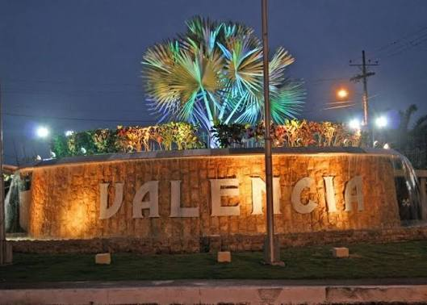
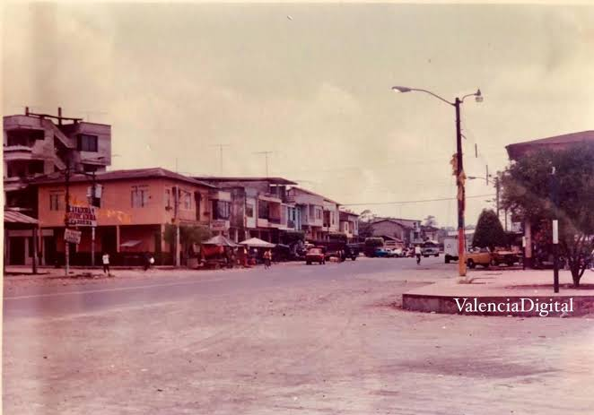
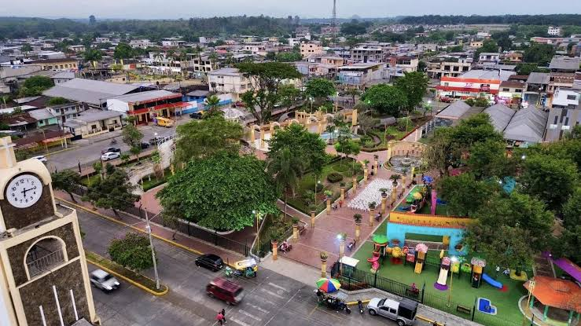
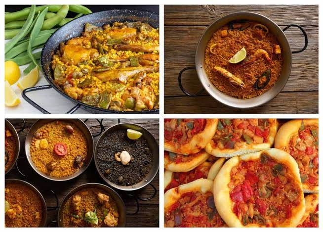
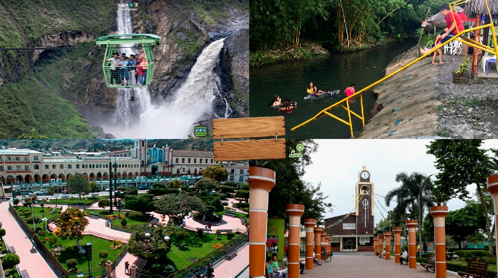
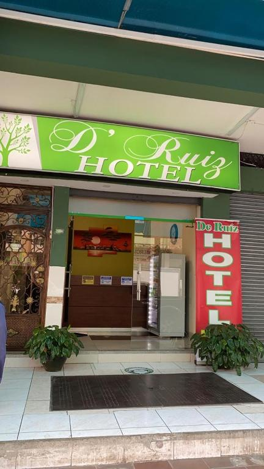
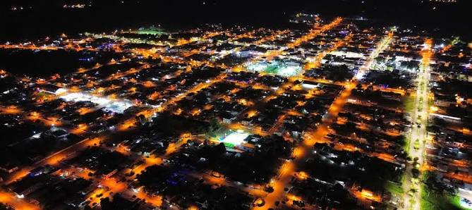

Bienvenido a la página oficial del cantón Valencia. Destacado por su vegetación exuberante, su alta producción agrícola de banano, cacao y palma africana, así como por sus balnearios naturales de agua dulce.

Inició como un pequeño recinto poblado por agricultores en la primera mitad del siglo XX. Gracias al esfuerzo de sus habitantes y al continuo crecimiento de su producción agrícola, fue elevado a la categoría de cantón el 13 de diciembre de 1995.

Su división administrativa comprende áreas urbanas y rurales bien delimitadas:

La cocina valenciana resalta los mejores sabores del campo costeño:

Destacan el Balneario Chipe, el río San Pablo, sus refrescantes saltos de agua, quintas agroturísticas y la emblemática Feria del Ganadero durante sus fiestas patronales.

Ofrece hostales rurales, quintas de descanso y hoteles en la zona urbana acondicionados para recibir a los visitantes amantes del turismo ecológico.
Alcalde: Daniel Macías

Cuenta con una población cercana a los 50.000 habitantes, caracterizada por ser emprendedora, acogedora y dedicada al agro.
Ubicado al noreste de la provincia de Los Ríos, limita con el cantón Quevedo, la provincia de Cotopaxi y la provincia de Santo Domingo de los Tsáchilas.